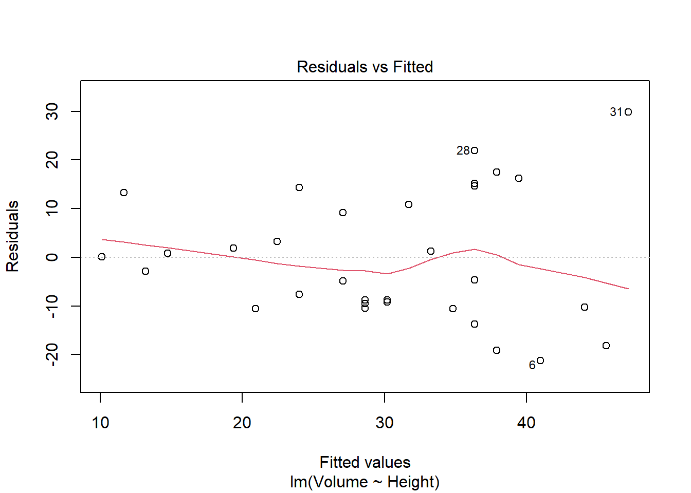

Si la inferencia era probar la sopa, la regresión lineal es nuestro intento de ser adivinos. Imagina que quieres saber cuánto mide un árbol sin tener que treparlo, solo mirando cuánto mide su tronco. Básicamente, le decimos al ordenador: “Oye, aquí tienes unos datos, ¡encuéntrame la línea que mejor une estos puntos!”. Es como intentar unir los puntos de un dibujo infantil, pero con matemáticas serias.
📝 Marco Teórico
El Modelo:\[Y = \beta_0 + \beta_1 X + \varepsilon\]. Intentamos explicar una variable dependiente ($Y$) mediante una independiente ($X$).
Mínimos Cuadrados (MCO): Buscamos minimizar la suma de los cuadrados de los errores: \[\sum (Y_i - \hat{Y}_i)^2\].
Interpretación:\(\beta_1\) nos dice cuánto cambia \(Y\) por cada unidad que aumenta \(X\).
Supuestos: Linealidad, homocedasticidad (varianza constante), independencia y normalidad de los residuos.
Inferencia: Construimos intervalos de confianza para los coeficientes y contrastes de significación (\(t\)-test) para ver si \(\beta_1 \neq 0\).
🌳 Análisis práctico: Dataset trees
Queremos predecir el volumen de madera (Volume) a partir de la altura (Height).
data(trees)# Ajuste del modelomodelo <-lm(Volume ~ Height, data = trees)# Resumen del modelosummary(modelo)
Call:
lm(formula = Volume ~ Height, data = trees)
Residuals:
Min 1Q Median 3Q Max
-21.274 -9.894 -2.894 12.068 29.852
Coefficients:
Estimate Std. Error t value Pr(>|t|)
(Intercept) -87.1236 29.2731 -2.976 0.005835 **
Height 1.5433 0.3839 4.021 0.000378 ***
---
Signif. codes: 0 '***' 0.001 '**' 0.01 '*' 0.05 '.' 0.1 ' ' 1
Residual standard error: 13.4 on 29 degrees of freedom
Multiple R-squared: 0.3579, Adjusted R-squared: 0.3358
F-statistic: 16.16 on 1 and 29 DF, p-value: 0.0003784
Por cada pie que aumenta la altura, el volumen aumenta de media 1.54 unidades.
Contraste de significación: El \(p\)-valor asociado a Height es 4^{-4}. Como es menor a 0.05, el efecto de la altura sobre el volumen es estadísticamente significativo.
# Para comprobar los supuestos, veamos cómo se ajusta:plot(modelo, which =1) # Gráfico de residuos vs ajustados

Como no conocemos la población completa, el intervalo nos da el margen de error. Podemos decir con un 95% de confianza que el efecto real de la altura sobre el volumen está entre 0.76 y 2.33 unidades por pie.
Si los puntos están repartidos al azar sin formar patrones claros (como una “nube” sin forma), ¡nuestros supuestos de homocedasticidad e independencia se cumplen!
¡Ahora sí que hemos cerrado el círculo: de la muestra a la predicción!